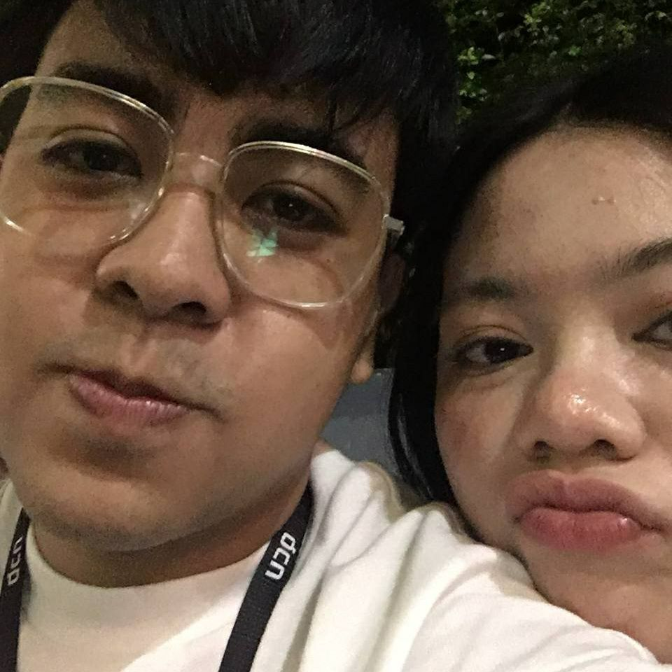

iyam_nemo

143 likes
iyam_nemo Hi Elle, Today is 11/13/2023 and I dont really know what to tell you here kasi di ko alam kung ano tong feeling na nararamdaman ko ngayon but today is a complete roller coaster feeling. Four days before your flight and also maybe the last time na nakasama kita is earlier today, Di ko alam super sketchy na kasi ng sched mo this week but still di ko pa rin matatanggap kung eto yun last before your flight. It's been ten days mula nung sinabi mo na tayu na(keleg), but today was more special for me than the day you finally told me na tAyU na. You've literally hurt my feelings today, I ask myself repeatedly kung ano ba nagawa ko or saan ba ko nagkulang, I still think na super dami kong pagkukulang sayo and I'm fully aware of that, I always says na i'll get better but I don't know when and how, Promise is not a promise but I'll try again and again. Your cold stare and pretending to be a nonchalant around me literally kills me, super sakit to the point na I can't even react earlier.
My heart stopped for a moment after you leave me. A deep sorrow I felt after you leave, I opened my phone even tho dead batt na phone ko hoping na I could message you one last thing, I was thinking of a Goodbye cause I thought I'm really messed up today, But the word that pops up to my head is to ask you na balikan ako, Not sure kung marereceive or nasend ko ba yung message ko kasi my phone instantly died after that decision. I've waited for a couple of minute and you came back for me. My heart stops bleeding, No words can explain how much I felt appreciated and lucky to have you in my life. Maybe it wasn't that much for you pero I've finally see that you are sincere to me, not to say na hindi ko nakikita yung sincerity mo before but today was a complete different kind. Thank you Elle, I'll keep on loving you no matter what, despite our distance together I love you always and all ways my love.
iyam_nemo Happy 1th monthsary baby :*
November 13